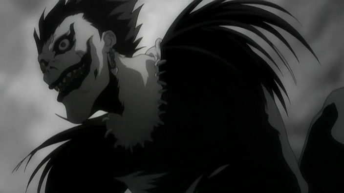

INICIO
CAPITULOS
DEATH NOTHE PERSONAJES
LIGHT YAGAMI
MISA AMANE
RYUK
REM
L. LAWLIET
NATHAN RIVER
MICHAEL KEEHL
KIYOMI TAKADA
TERU MIKAMI
Nayeli Ramírez Juárez todos los derechos reservados ©2015
|
RYUK

Ryuk es un shinigami, el cual aburrido por la poca actividad
en su mundo, decide dejar caer una Death Note en el mundo humano por el simple hecho de entretenerse y así evadir el
aburrimiento, otra característica muy significativa de Ryuk es el amor que tiene a las manzanas, ya que las del mundo shinigami
son de mal sabor y muy arenosas, y por tanto estas le son muy jugosas, las adora demasiado que cuando pasa un tiempo sin consumir
ninguna, empieza a retorcerse y a comportarse como un niño, debido al enorme síndrome de abstinencia que experimenta.
Tiene un carácter sumamente especial para ser un shinigami, puesto que es muy curioso y tiene mucha iniciativa, algo realmente
extraño en su especie, Ryuk no siente ningún apego por nada, ya que se limita a hacer de mero observador cuando Light, el humano al
que queda unido mediante el cuaderno, comienza a asesinar indiscriminadamente a criminales y demás personas que se opongan a su
ideología pero eso si, cuando este último le manda a realizar alguna acción, la cumple solo si considera que puede
seguir entreteniéndose.
|